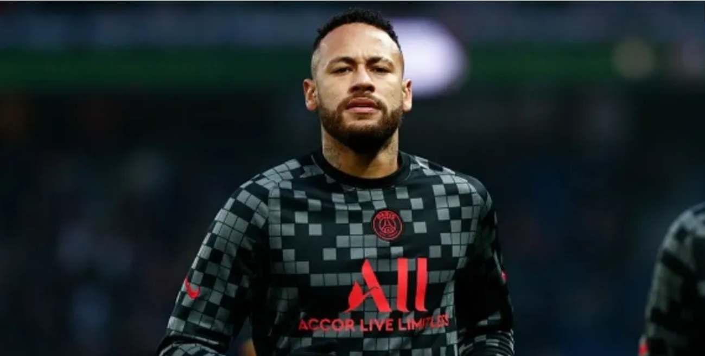

Última copa do mundo de Neymar Júnior.
O grande craque brasileiro irá se despedir.
Escrito por Lorenzo Vilaverde.

Em uma entrevista para à emissora DAZN, o craque brasileiro, Neymar, atualmente com 29 anos, deu a triste notícia de que a Copa do Mundo do Qatar de 2022 será a sua última.
Esse assunto repercutiu muito na internet nessas últimas semanas, logo depois do vazamento dessa notícia. Muitos críticos do jogador, inclusive, concordam a respeito da decisão de aposentadoria, pois acreditam que Neymar é um dos motivos pelos quais a seleção brasileira ainda não conseguiu conquistar o tão sonhado hexa campeonato.
O que para mim e grande parte dos torcedores brasileiros é algo inconcebível, é a desvalorização da trajetória do craque, considerado ídolo dentro e fora do Brasil. Referência do futebol arte, de reconhecida habilidade, símbolo de “ousadia e alegria”, Neymar é alvo de desrespeito por parte de alguns ex-jogadores, comentaristas e narradores, desde a sua primeira convocação para a seleção principal do Brasil.
Neymar, em plena forma aos 29 anos de idade, na copa de 2026, terá 34, a mesma idade de Lionel Messi, que ainda está em atividade e em alto nível e, portanto, tem total capacidade de continuar jogando, O adulto Ney ainda tem muito futebol para mostrar e seria, sim, mais uma chance para trazer o hexa para o Brasil e, caso 2022 não seja o ano para isso, ficaremos na torcida.
Resta saber se ele terá “cabeça” para continuar no futebol e enfrentar os desafios futuros e o descrédito de alguns. Para continuar, precisa estar saudável física e mentalmente e mostrar a força de vontade de um verdadeiro craque de bola que é.